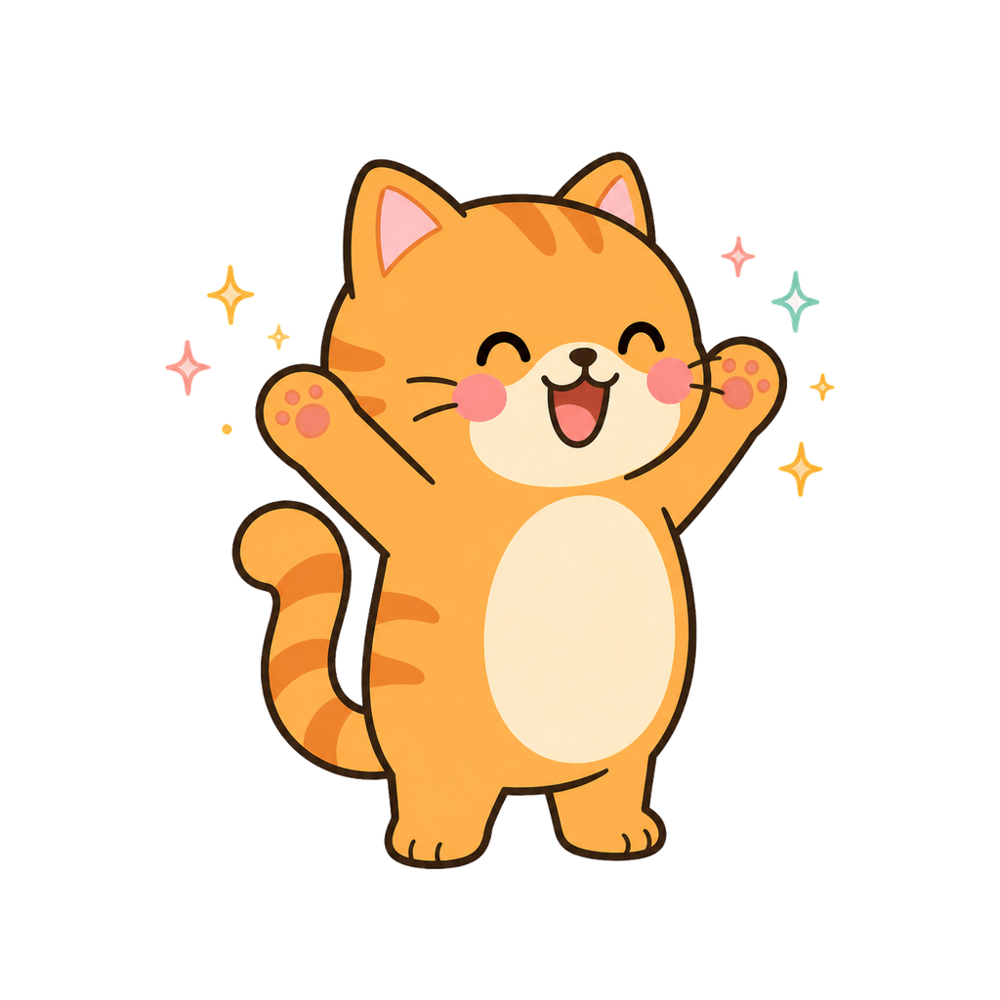

🐱🥊 ✦ 🐵🍎
にゃんこカラテ
〜 リズムにのって ネコパンチ! 〜
🐵が「ハイッ!」と なげたら 2はく あとに ポン!
スペース か がめんタップで ネコパンチ 🥊
「ハイハイッ!」は 2れんぞく! 🐟は ちょっと おそい!
スペース か がめんタップで ネコパンチ 🥊
「ハイハイッ!」は 2れんぞく! 🐟は ちょっと おそい!
🥇
ハイレベル!!
ピタッ!(パーフェクト)0
セーフ(グッド)0
あちゃ〜(ミス)0
さいだいれんぞく0